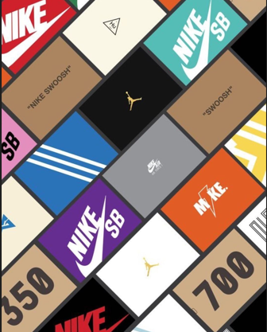
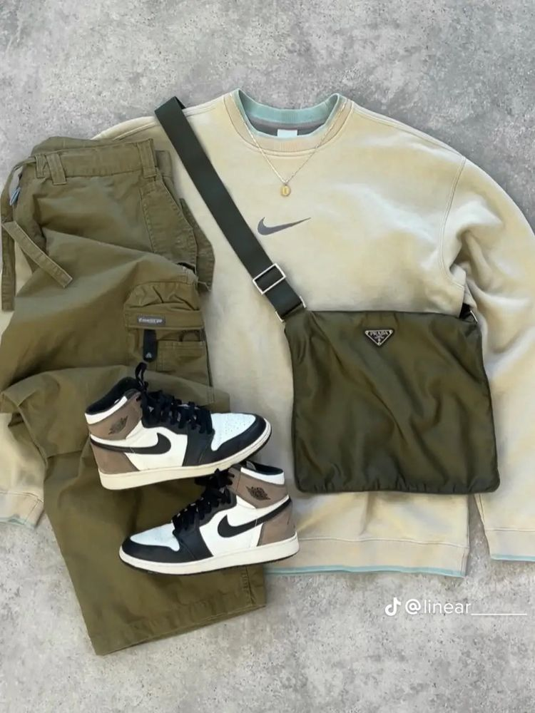
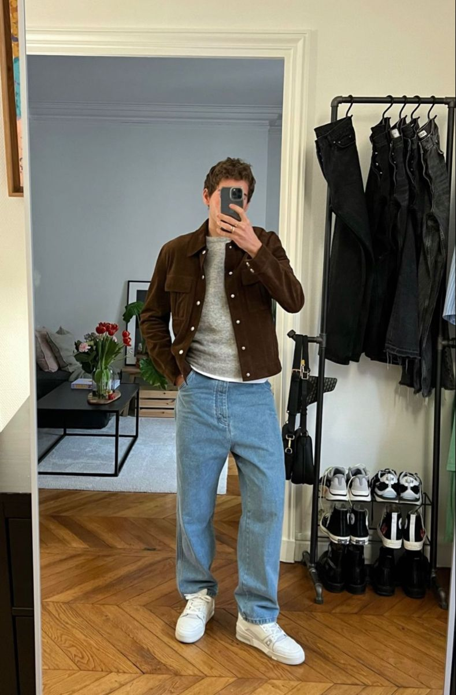

En Maikes and Daniels tenemos el objetivo específico para proporcionar con lo mejor de la tienda online en la venta ropa deportiva y casual así como de calzado como tenis y zapatos de las mejores marcas para brindar calzados de muy buena calidad para los mejores coleccionadores y fans de los sneakers.
También contamos con la finalidad de la nueva marca de ropa Maikes and Daniels, también promocionamos prendas de vestir modernas y de alta calidad y además de las mejores marcas con la intención de crear fidelidad por parte de los clientes.
Tenis de moda
Nike Dunk Low. Las Nike Dunk Low llevan ya dos años pisando muy fuerte y no dejan de ganar popularidad, tanto es así que tienen incluso cuentas de fans en la red social Instagram. La versión más deseada es la Nike Dunk Low Retro, que se creó para la cancha de baloncesto y ahora despuntan entre las más buscadas para el asfalto. Un icono de los años 80 que no hace sino ganar cada vez más fama.
New Balance 327. Uno de los modelos de New Balance más populares actualmente. Las 327 se caracterizan por una suela dentada que se prolonga hacia el talón aportando un toque de distinción único e inconfundible. Supusieron un hito en los años 70 por su innovación. La reinterpretación contemporánea es el híbrido perfecto entre la modernidad y la tradición.
Air Jordan 1 Heritage. Un homenaje al legado de la franquicia Jordan que vio la luz el pasado mes de abril. Recuperan los colores históricos de los Chicago Bulls y seña de identidad del Jumpman -university red, negro y blanco-, pero distribuidos de una forma nunca vista: mayoritariamente en piel blanca; con el talón, la punta, el revestimiento del tobillo y el 'swoosh', así como la suela, en el flamante color rojo. El negro se para los pequeños detalles del botín, los cordones y parte de la lengüeta, así como el logo Jordan Wings.
Air Jordan 1 Chicago Reimagined. Las Air Jordan son un icono indiscutible gracias a Michael Jordan. Las Chicago Reimagined son un alarde de nostalgia vintage, disponibles en White/Varsity Red/Black, la misma combinación de colores que las Air Jordan originales. Su fecha de lanzamiento está prevista para octubre de este año y prometen arrasar en venta y reventa.
Vans Eco Theory SK8-Hi Tapered. Las Eco Theory SK8-Hi Tapered imprimen el respeto por el medio ambiente a este icono de Vans. Llevan una lona de algodón 100 % de cultivo ecológico, suelas de caucho natural de fuentes gestionadas de manera responsable. Son más esbeltas y ajustadas que las tradicionales SK8-Hi y llevan también bordados.

Ropa Casual
La moda casual se caracteriza por diferentes tipos de ropa en combinación cómoda así como funcionales y prácticos. Este tipo de estilo es relajado y moderno. La ropa casual es inmejorable para el día a día y la puedes adaptar perfectamente a todo tipo de situaciones y tipos de clima.

Oufits
Los atuendos business casuales para hombres suelen incluir una combinación de pantalones de vestir, camisas, sacos y zapatos de cuero así como tenis casuales como los air force one de NIKE, Puedes optar por usar corbata o prescindir de ella, según la ocasión y la cultura de tu lugar de trabajo.
Para hacer un outfit casual, son como la palabra lo dice, para una situación casual, eso significa que la situación no amerita un look formal y estilizado. Este estilo se caracteriza por tener mas variedad en colores. Olvídate del zapato apretado o trajes y camisas duras.

Tipos de Moda
Estilo Casual
Comodidad y simplicidad. Este sería un buen resumen del estilo casual. Es perfecto para el uso diario, ya que se adapta a cualquier situación cotidiana. Puedes estar haciendo recados o pasando el rato con amigos, que el estilo casual siempre va a encajar. Para lograr este look casual, opta por prendas de vestir cómodas como vaqueros, camisetas o zapatos nike. Juega con varias prendas una encima de la otra, así le darás un toque de dinamismo a tu outfit.
Estilo Clásico
El estilo clásico es atemporal y elegante. Se caracteriza por su nitidez, por sus colores neutros y prendas de vestir de líneas rectas. Para conseguir este look, utiliza prendas básicas de buena calidad como chaquetas a medida, camisas blancas con botones o zapatos negros. Los accesorios deben ser discretos y mínimos, como por ejemplo un par de anillos o un reloj de cuero elegante.
Estilo Preppy
Es parecido al clásico pero con algunas diferencias. Tiene su origen en los jóvenes de clase alta estadounidense que iban a estudiar a las mejores escuelas en los años veinte. De este estilo son características las prendas estilo college o del mundo del golf así como las siluetas clásicas. Un ejemplo de este outfit sería: pantalón de mezclilla con camisa de botones y encima un suéter de punto grueso en un tono negro o beige.